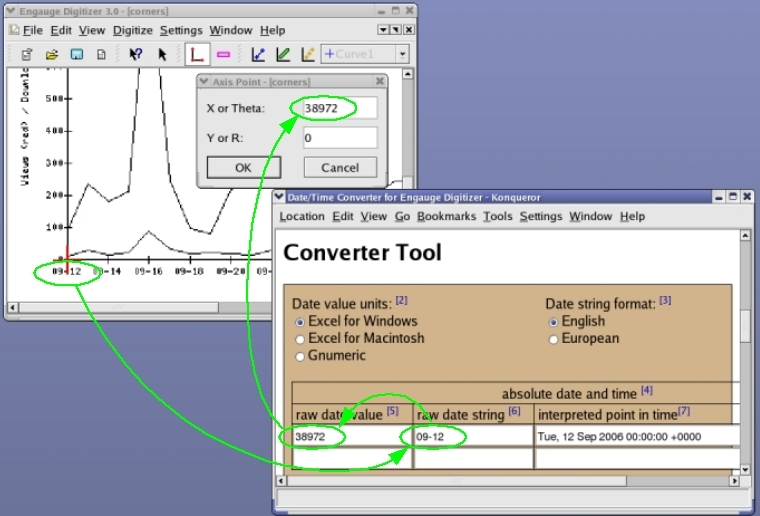

The Converter Tool below was designed to add date and time handling to Engauge Digitizer. Specifically, this tool is used to convert axis point coordinates that sometimes appear in the original image as date and/or time text, into numeric date value coordinates that Engauge Digitizer can handle [1]. The numeric date values of the digitized curve points can then be exported to your favorite spreadsheet, which can convert those date values back to date and/or time text.
The absolute date and time table is used to convert date/time coordinates of the axis points. The relative date and time table is useful for converting the date/time coordinate resolution, shown in the Engauge Digitizer status bar as a decimal number, back to more understandable standard time units.
In the example below (corners.png in the samples directory), the horizontal axis is specified by date coordinates. Since Engauge Digitizer is expecting numbers and not date strings, you enter date 09-12 into the Converter. Its corresponding numeric date value 38972, which appears immediately on the left, is then copied to Engauge.

[1] Engauge Digitizer does not directly support date and time strings because they can quickly become very complicated: Are the dates Gregorian or Julian? Are the date values for Excel for Windows, Excel for Macintosh, or Gnumeric? Are the month and day specified in the English or European order? What values will be filled in if parts of the date and time are unspecified? Adding date and time features would only benefit a few users, while making the user interface of Engauge Digitizer much more confusing for everyone (as these footnotes would attest).
[2] Excel for Windows date value is 1 for just after midnight January 1, 1900. Excel for Macintosh date value is 0 for just after midnight January 1, 1904. Gnumeric date value is 0 for just after midnight on December 30, 1989.
[3] In English units the month precedes the day (9/1 is September 1). In European units the day precedes the month (9/1 is January 9).
[4] Enter date and/or time values here that correspond to points in time on the calendar. Any parts of the date that are not specified will be assumed to be the current year, month and day, correspondingly. Any parts of the time that are not specified will be assumed to be zero.
[5]A number representing the days since the epoch given by footnote [6]. This number is produced by the DATEVALUE() function that is available in common spreadsheet programs. An example is the datevalue of 27395 for January 1 1975 in Excel for Windows. Konqueror browser bug - Date values computed from date strings before December 13, 1901 20:45:32 (datevalue = 713.86518) may be stuck at the December date.
[6]A string containing the date and/or time, with the date always preceding the time if both are used. The supported date and time formats are listed.
[7]This read-only field displays the results of the raw date value and raw date string conversions, in terms of an absolute point in time.
[8] Enter date and/or time values here that correspond to differences between points in time on the calendar. Any parts of the date and time that are not specified will be assumed to be zero.
[9]A decimal number representing a time interval, in units of days.
[10]This read-only field displays the results of the raw date value conversion, in terms of a time interval.